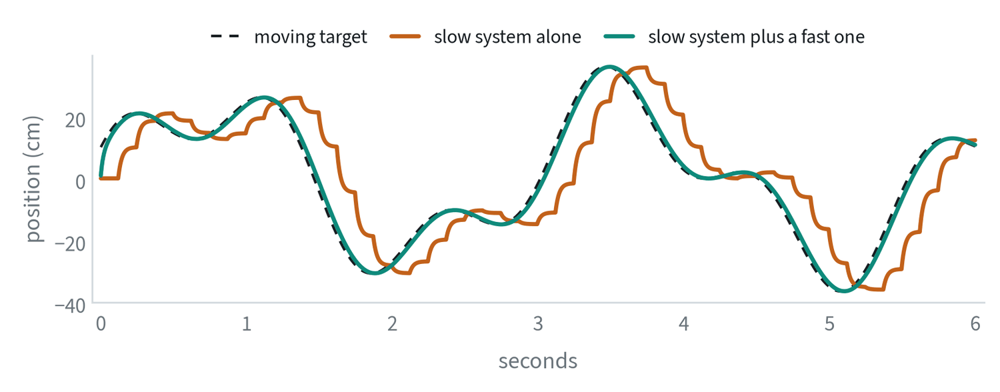
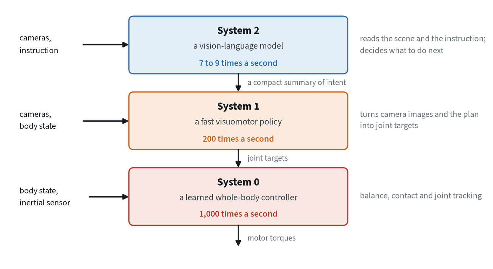
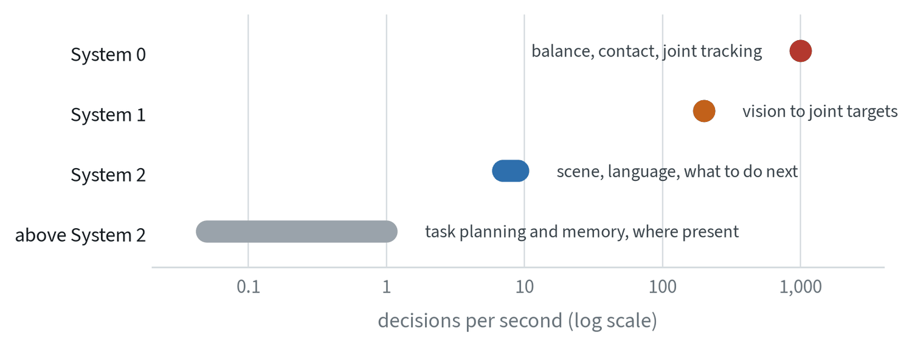
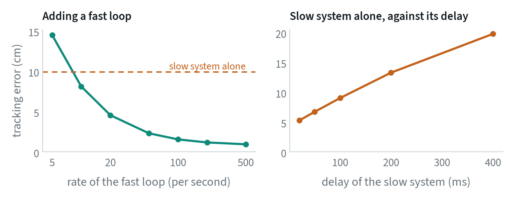

One model cannot be both fast and thoughtful
A robot needs to understand a scene and an instruction, which takes a large model and a noticeable fraction of a second. It also needs to correct its motion many times a second, which takes a small model. No single network does both well, so current robot systems split the work between models that run at different speeds.


The simulation is deliberately simple and makes the whole argument. A slow system acting alone is always answering a question that is out of date. Put a fast loop beneath it and the pair tracks eight times more closely, with the same slow system.
The names come from psychology. Daniel Kahneman’s Thinking, Fast and Slow describes human thought as a fast, automatic System 1 and a slow, deliberate System 2. Robotics borrowed the labels, which is why the slow model has the higher number.
System 2, System 1, System 0


| System 2 | System 1 | System 0 | |
|---|---|---|---|
| Job | Understand the scene and the instruction; decide what to do | Turn vision and intent into motion | Keep the body balanced and the joints on target |
| Built from | A vision-language model | A smaller transformer, often with a flow-matching or diffusion action head | A small network trained by reinforcement learning in simulation, or a classical controller |
| Inputs | Cameras, language | Cameras, body state, System 2’s output | Body state, inertial sensor, System 1’s targets |
| Rate | A few times a second | Tens to hundreds of times a second | Around a thousand times a second |
| Trained on | Web data, then robot data | Robot demonstrations | Simulation |


System 2 and System 1 are the pair most systems have. System 0 is a newer label for the layer underneath: on a humanoid, the controller that handles balance and contact for the whole body, which used to be hand-engineered and is now often learned. The notes on reinforcement learning and robotics fundamentals cover what that layer does.
What about System 3?
“System 3” is not an established term. The published systems I could find describe Systems 0, 1 and 2. The label is sometimes used informally for whatever sits above System 2, and that layer is real even where it has no agreed name.
- Task planning. Breaking “tidy the kitchen” into an ordered list of jobs, over minutes.
- Memory. What has been done, where things were last seen, what the person asked for earlier.
- Tools and knowledge. Looking something up, asking a person, calling another model.
- Coordination. Several robots, or a schedule of tasks across a shift.
This layer is usually a large language model running at most once a second, often off the robot, and it is the least standardised part of the stack. If you meet “System 3” in a talk or a paper, check what that author means by it. The note on long-horizon methods covers the techniques that live here.
How fast does the fast loop need to be?


Two results stand out. A fast loop that is not fast enough is worse than none: at 5 updates a second it adds its own staleness on top of the slow system’s and tracks worse than the slow system alone. The benefit appears above about 10 a second and is mostly gained by 100.
The right-hand panel isolates what the slow system loses to delay. Its error is close to what a simple estimate gives: a target moving at speed and observed with a total delay of is mislocated by about . The delay that matters is the whole chain,
where is the update rate. Halving the model’s inference time helps only as much as its share of that sum.
The interface is the design
What System 2 hands to System 1 decides most of how a dual system behaves.
| Interface | What is passed down | Strength | Weakness |
|---|---|---|---|
| Language | A sub-task as text | Readable; the two models can be trained separately | Narrow: text cannot say exactly where or how |
| A latent vector | A learned summary of the scene and intent | Rich, and trained for the purpose | Opaque; the two halves must be trained together |
| Internal features | System 1 attends directly to System 2’s layers | Nothing is lost in a bottleneck | Tightly coupled; System 1 depends on the exact System 2 |
| Goals | A target image, points or a trajectory sketch | Concrete and checkable | Needs a model that can produce good goals |
The third row is shared attention, and it is how several widely used policies attach a small action network to a large vision-language model. It blurs the line between one model and two: the parts run at different rates and are still trained as one.
How the two systems are trained
| Recipe | How | Trade-off |
|---|---|---|
| Separately | Train the low-level policy on demonstrations labelled with sub-tasks; use a vision-language model as the planner | Simple and modular; the planner does not know what the policy can do |
| Jointly, end to end | One loss on actions flows back through both systems | The interface is learned for the task; the two halves cannot be swapped |
| Jointly, with insulated gradients | The slow model is trained on its own token loss and the fast one on actions, sharing features | Keeps the slow model’s knowledge; needs care in routing the losses |
| Staged | Pretrain the slow model, freeze it, then train the fast model on its outputs | Stable; the slow model’s features were not shaped for control |
Whichever recipe is used, the fast system must be trained with the delay it will see in deployment. If it is always shown the slow system’s output for the current frame during training, and receives an output that is 100 to 150 ms old when deployed, it has been trained on a relationship that never occurs. The usual fix is to sample a random offset between the two during training.
Running at different speeds
- The fast system uses a stale plan. System 1 acts many times on each output of System 2. It must be trained that way, with the delay it will see in deployment, or it will expect fresher guidance than it gets.
- The fast system needs its own eyes. If only System 2 sees the cameras, the fast loop is blind between updates. In the simulation above the fast loop’s own view of the target is what closes the gap.
- Asynchronous by design. The two run in separate loops. System 1 never waits for System 2. It uses whatever the latest output is.
- Caching. System 2’s result is computed once and reused, as the deployment note measures.
- Separate hardware. The large model can run on a bigger processor, or off the robot, while the fast loops stay on board and keep working if the link drops.
One model or several
| One model | Two or three systems | |
|---|---|---|
| Simplicity | One network, one training run | Interfaces, timing and several training recipes |
| Reaction time | Limited by the whole model | Set by the fast system |
| Reasoning | As good as the model, at every step | As good as System 2, a few times a second |
| Failure analysis | Hard to localise | A failure can often be assigned to a layer |
| Typical use | Arms at moderate rates, with action chunks covering the gap | Humanoids and anything needing balance or fast contact |
The two are closer than they look. A single model that produces one-second action chunks is already slow thinking followed by fast open-loop execution. A dual system makes the fast part closed-loop. As tasks demand quicker reactions, the field has moved from the first toward the second.
Common mistakes
- Giving only the slow system the cameras. The fast loop then cannot react to anything it was not told about.
- Training the fast system on fresh plans. Train it with the delay it will see when deployed.
- Assuming the labels are standard. System 0, and anything called System 3, mean different things to different groups.
Terms
- System 2
- The slow model that understands the scene and decides what to do.
- System 1
- The fast model that turns intent and vision into motion.
- System 0
- The fastest layer, handling balance, contact and joint tracking.
- Dual-system architecture
- A policy split into a slow reasoning model and a fast acting model.
- Latent interface
- A learned vector passed from the slow model to the fast one.
- Asynchronous
- Running in separate loops, with neither waiting for the other.
- Staleness
- The age of the information an action was computed from at the moment it takes effect.
Further reading
- Figure, 2025. Helix: A Vision-Language-Action Model for Generalist Humanoid Control.
- Figure, 2026. Introducing Helix 02: Full-Body Autonomy.
- NVIDIA, 2025. GR00T N1: An Open Foundation Model for Generalist Humanoid Robots.
- Zhang et al., 2024. HiRT: Enhancing Robotic Control with Hierarchical Robot Transformers.
- Cui et al., 2025. OpenHelix: A Short Survey, Empirical Analysis, and Open-Source Dual-System VLA Model for Robotic Manipulation.
- Black et al., 2024. π0: A Vision-Language-Action Flow Model for General Robot Control.
- Kahneman, 2011. Thinking, Fast and Slow. Farrar, Straus and Giroux.